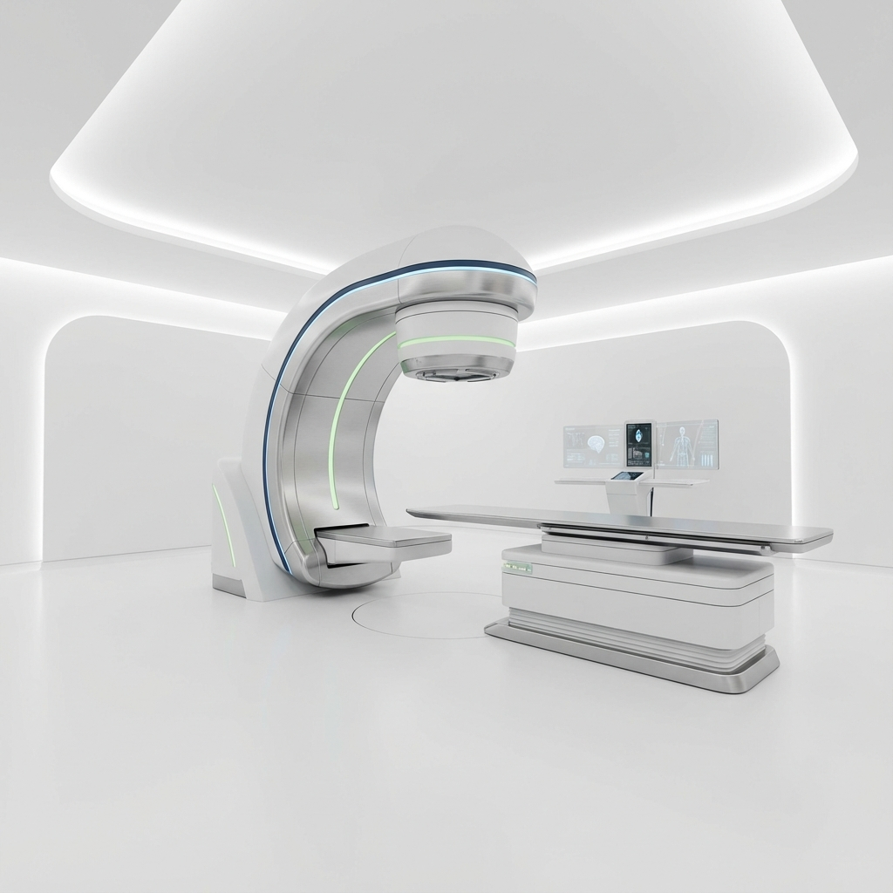

방사선 치료 QA의 혁신적 통합 솔루션
복잡한 데이터 통합부터 자동 트렌드 분석, 전문 리포트 생성까지 하나의 플랫폼으로 해결하십시오.
- 데이터 자동 통합 수동 계산 및 입력 최소화
- 실시간 트렌드 분석 장비 성능 변화의 동적 모니터링
- 규격화된 리포팅 감사 대비용 전문 리포트 즉시 생성
IBA Dosimetry의 공식 판매처로서 세계 최고 수준의 QA 장비와 통합 솔루션을 국내 의료기관에 공급합니다.

도지케어는 방사선 종양학 분야의 최첨단 장비 공급과 기술 지원을 아우르는 토탈 솔루션 파트너입니다.
도지케어는 IBA Dosimetry의 우수한 QA 시스템을 국내에 보급하며, 단순한 장비 판매를 넘어 설치, 교육, 유지보수, 그리고 자체 개발 소프트웨어인 'Easy Machine'을 통한 워크플로우 최적화까지 의료 현장에 필요한 모든 것을 책임집니다.
복잡한 방사선 분포를 정확하게 분석하여 치료 계획의 신뢰도를 높입니다.
최신 도지메트리 장비 및 시스템 도입을 위한 전문 컨설팅을 제공합니다.
시스템의 안정적인 운영을 위한 정기 점검과 기술 교육 프로그램을 운영합니다.
복잡한 데이터 통합부터 자동 트렌드 분석까지, 차세대 QA 워크플로우를 경험하십시오.
복잡한 데이터 통합부터 자동 트렌드 분석, 전문 리포트 생성까지 하나의 플랫폼으로 해결하십시오.

모든 주기적 품질 관리(QA) 작업을 하나의 통합 대시보드에서 관리하세요.

수동 계산의 번거로움을 없애고, 물리 분석을 스마트하게 자동화합니다.
Varian MPC, IBA MyQA Daily, PTW 등 모든 표준 장비의 데이터를 직접 가져오고 버튼 하나로 월간 점검표에 반영합니다.
Chart.js 기반의 대화형 차트를 통해 수년간의 장비 성능 변화를 추적하고 고장을 사전에 예방합니다.
다크 모드와 직관적인 UI, 통합 To-Do 리스트가 연구원과 물리사에게 최적의 환경을 제공합니다.